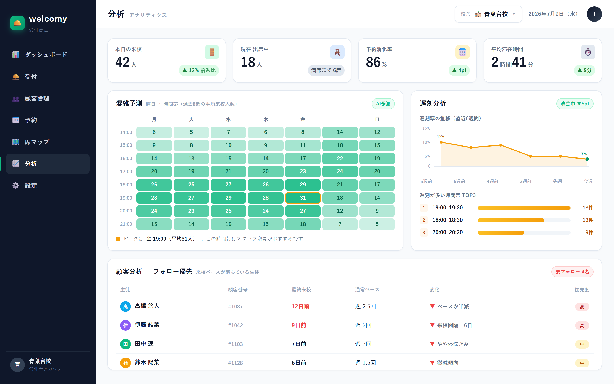
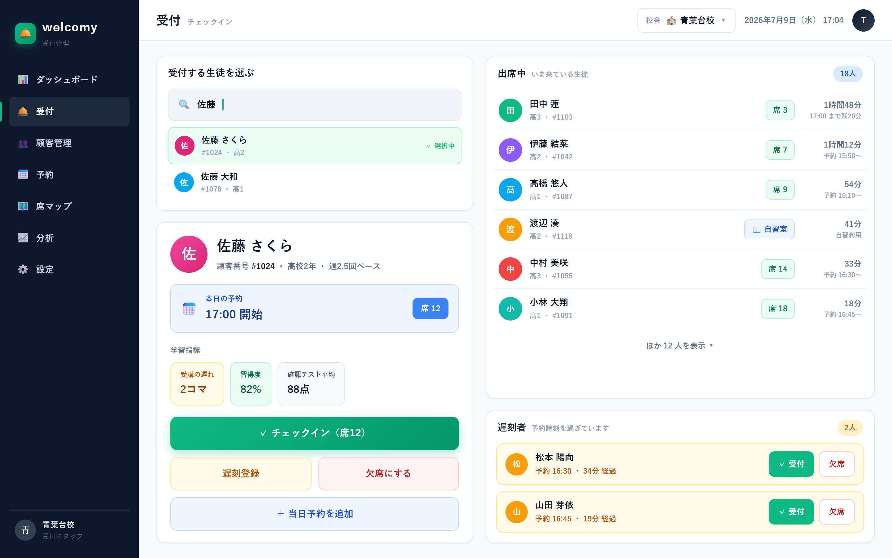
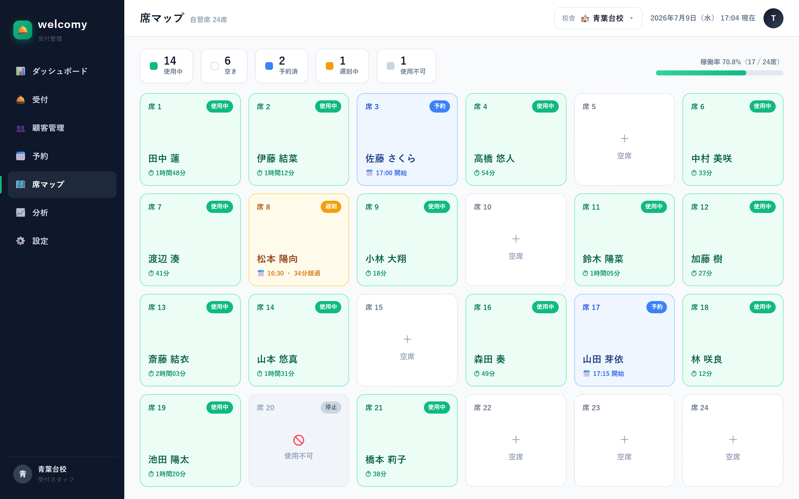

受付管理 SaaS — 実際の学習塾で本番稼働中
受付・予約・席の割り当て・顧客台帳・連絡・分析。バラバラだった受付まわりの仕事をひとつに束ねる、現場発の受付管理システムです。

名簿は手書きやExcelに散在。受付のたびに本来の仕事が止まる。
ダブルブッキングや空席の見落とし。突然の遅刻・欠席で現場が混乱。
いつ混むのか、誰が離れかけているのか。振り返る手段がない。
Features
来店から退店まで、welcomyひとつで完結します。
受付
生徒・会員を検索して、チェックイン／遅刻／欠席／当日予約をワンタップで。滞在時間は自動記録され、席の自動おすすめで案内も迷いません。

予約 × 席管理
席マップで「使用中・空き・予約済・遅刻中」が一目瞭然。予約はタイムラインで管理し、ダブルブッキングを構造的に防ぎます。

分析
来店・滞在の推移、席の稼働率、時間帯×曜日の混雑予測、遅刻分析。来店間隔が伸びている顧客を検知してフォロー優先度を提示— 攻めの運営判断を支えます。
業種対応
「席→マシン／ベッド」「生徒→会員」のように用語を現場に合わせて変更でき、機能はモジュール単位でON/OFF。学習塾・ジム・整体・サロン・コワーキングまで、ひとつの土台で対応します。
welcomyは実際の学習塾の校舎で本番稼働中。開発者自身が受付現場の出身で、毎日使いながら改善を続けています。マルチテナント環境のデータ分離（RLS）はセキュリティ監査を実施済みです。
メールで現場の悩みを聞かせてください
オンラインで実際の画面をお見せします
現場の用語・席配置に合わせてセットアップ
使いながら一緒に改善していきます
規模（人数・拠点数）と使う機能に応じて個別にご案内しています。トライアルは無料です。お気軽にご相談ください。
できます。CSVをアップロードして列を割り当てるだけで、カスタム項目ごと取り込めます。
使えます。用語の変更とモジュールON/OFFで、ジム・サロン・コワーキングなど受付のある業態に対応します。